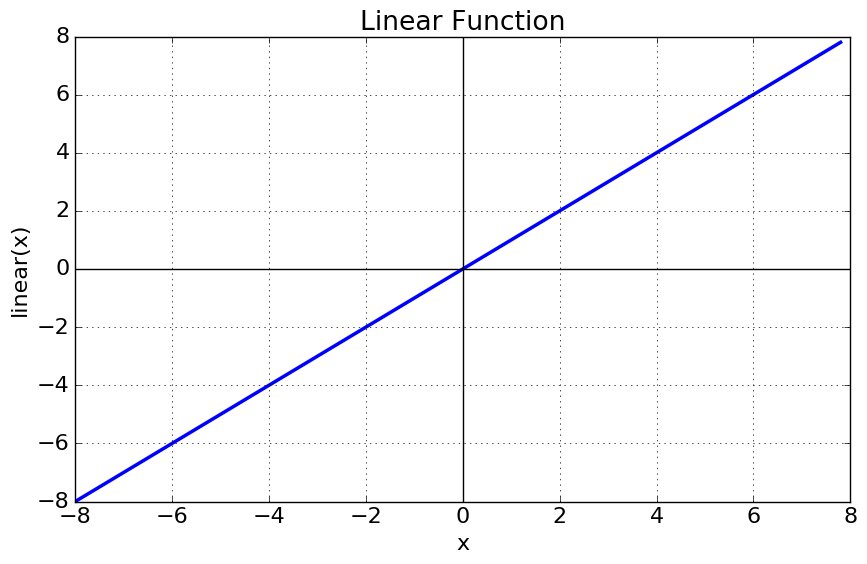

Deep Learning For Engineers¶
A typical deep learning project starts with preparing the dataset (Data), preprocessing the data such that the domain data is is getting transformed to model specific numeric data (Data Iterators). Then comes the model building part by stacking the neural network layers (with Activation Functions). Followed by defining a Cost/Loss Function which compares the ground truth value with predicted value and gives out a numerical value/tensor. Once the loss function is established, then the natural following step would be considering the the loss value/tesnor and use a Optimization Function which uses some special algorithms along with back propagation to bring down the loss value/tensor by adjusting the network weights.
Epoch : One Epoch is when an ENTIRE dataset is passed forward and backward through the neural network only ONCE.Batch Size : Total number of training examples present in a single batch.Iterations/Steps : Iterations is the number of batches needed to complete one epoch.
Eg: We can divide the dataset of 2000 examples into batches of 500 then it will take 4 iterations to complete 1 epoch.
Where:
Epoch is 1
Batch Size is 500
Iterations is 4
Activation Functions¶
It’s just a thing (node) that you add to the output end of any neural network. It is also known as Transfer Function. It can also be attached in between two Neural Networks.
Why we use Activation functions with Neural Networks?
It is used to determine the output of neural network like yes or no. It maps the resulting values in between 0 to 1 or -1 to 1 etc. (depending upon the function). The Activation Functions can be basically divided into 2 types-
- Linear Activation Function
- Eg: $$f(x) = x$$
- As you can see the function is a line or linear.Therefore, the output of the functions will not be confined between any range.
- It doesn’t help with the complexity or various parameters of usual data that is fed to the neural networks.
- Non-linear Activation Functions
- The Nonlinear Activation Functions are the most used activation functions. Nonlinearity helps to makes the graph look something like this
- It makes it easy for the model to generalize or adapt with variety of data and to differentiate between the output.
- The main terminologies needed to understand for nonlinear functions are:
- Derivative or Differential: Change in y-axis w.r.t. change in x-axis.It is also known as slope. That means, we can find the slope of the sigmoid curve at any two points.
- Monotonic function: A function which is either entirely non-increasing or non-decreasing.

- Why derivative/differentiation is used ?When updating the curve, to know in which direction and how much to change or update the curve depending upon the slope.That is why we use differentiation in almost every part of Machine Learning and Deep Learning.
Sigmoid or Logistic Activation Function¶
When to use?
- To predict probability
Pros:
- Inputs: Real value
- Outputs: 0 to 1 (used to predict the probability as an output)
- Nature : non-linear, continuously differentiable, monotonic, non-monotic derivative, and has a fixed output range.
Cons:
- Towards either end of the sigmoid function, the Y values tend to respond very less to changes in X.
- ts output isn’t zero centered. It makes the gradient updates go too far in different directions. 0 < output < 1, and it makes optimization harder.
- It gives rise to a problem of “vanishing gradients”.
- Sigmoids saturate and kill gradients.
- The network refuses to learn further or is drastically slow
The softmax function is a more generalized logistic activation function which is used for multiclass classification.
Tanh or hyperbolic tangent Activation Function¶
When to use?
- The tanh function is mainly used classification between two classes.
Pros:
- Inputs: Real value
- Outputs: [-1, 1]
- The advantage is that the negative inputs will be mapped strongly negative and the zero inputs will be mapped near zero in the tanh graph.
- Nature : non-linear, continuously differentiable, monotonic, and has a fixed output range.
Cons:
- Tanh also has the vanishing gradient problem.
ReLU (Rectified Linear Unit) Activation Function¶
The ReLU is the most used activation function in the world right now. Since, it is used in almost all the convolutional neural networks or deep learning.
When to use?
- For hidden layers
Pros:
- Inputs: Real numbers
- Outputs $max(0, inputs)$ [ 0 to infinity)
- As you can see, the ReLU is half rectified (from bottom). f(z) is zero when z is less than zero and f(z) is equal to z when z is above or equal to zero.
- Nature : non-linear, continuously differentiable, monotonic, and has a fixed output range.
Cons:
- But the issue is that all the negative values become zero immediately which decreases the ability of the model to fit or train from the data properly.
- That means any negative input given to the ReLU activation function turns the value into zero immediately, which in turns affects the mapping of the negative values appropriately.
- One of its limitation is that it should only be used within Hidden layers of a Neural Network Model.
- Some gradients can be fragile during training and can die. It can cause a weight update which will makes it never activate on any data point again. Simply saying that ReLu could result in Dead Neurons.
- In another words, For activations in the region (x<0) of ReLu, gradient will be 0 because of which the weights will not get adjusted during descent. That means, those neurons which go into that state will stop responding to variations in error/ input ( simply because gradient is 0, nothing changes ). This is called dying ReLu problem.
- The range of ReLu is [0, inf). This means it can blow up the activation.
Leaky ReLU¶
It is an attempt to solve the dying ReLU problem. The leak helps to increase the range of the ReLU function. Usually, the value of a is 0.01 or so. When a is not 0.01 then it is called Randomized ReLU.
When to use?
- For hidden layers
Pros:
- Inputs: Real numbers
- Outputs $max(random_number, inputs)$ [ -infinity to infinity)
- As you can see, the ReLU is half rectified (from bottom). f(z) is zero when z is less than zero and f(z) is equal to z when z is above or equal to zero.
- Nature : non-linear, continuously differentiable, monotonic, and has a fixed output range.
Cons:
- As it possess linearity, it can’t be used for the complex Classification. It lags behind the Sigmoid and Tanh for some of the use cases.
Cheat sheets:

APIs Check the Tensorflow APIs!
Layers¶
- Fully Connected/Dense Layers
- Dropout Layers
Loss/Cost Functions¶
Optimization Algorithms¶
On eof the best material on the topic can be found here @ http://ruder.io/optimizing-gradient-descent/
Batch gradient descent¶
Vanilla gradient descent, aka batch gradient descent, computes the gradient of the cost function w.r.t. to the parameters θ for the entire training dataset:
$$\theta = \theta - \eta \cdot \nabla_\theta J( \theta)$$
Stochastic gradient descent¶
Stochastic gradient descent (SGD) in contrast performs a parameter update for each training example $x^(i)$ and label $y^(i)$:
$$\theta = \theta - \eta \cdot \nabla_\theta J( \theta; x^{(i)}; y^{(i)})$$
Mini-batch gradient descent¶
Mini-batch gradient descent finally takes the best of both worlds and performs an update for every mini-batch of n training examples:
$$\theta = \theta - \eta \cdot \nabla_\theta J( \theta; x^{(i:i+n)}; y^{(i:i+n)})$$
Momentum¶
Momentum is a method that helps accelerate SGD in the relevant direction and dampens oscillations. It does this by adding a fraction γ of the update vector of the past time step to the current update vector:
$$ \begin{align} \begin{split} v_t &= \gamma v_{t-1} + \eta \nabla_\theta J( \theta) \ \theta &= \theta - v_t \end{split} \end{align} $$
Adagrad¶
Adagrad is an algorithm for gradient-based optimization that does just this: It adapts the learning rate to the parameters, performing smaller updates (i.e. low learning rates) for parameters associated with frequently occurring features, and larger updates (i.e. high learning rates) for parameters associated with infrequent features. For this reason, it is well-suited for dealing with sparse data.
Adadelta¶
Adadelta is an extension of Adagrad that seeks to reduce its aggressive, monotonically decreasing learning rate. Instead of accumulating all past squared gradients, Adadelta restricts the window of accumulated past gradients to some fixed size w.
Adam¶
Adaptive Moment Estimation (Adam) is another method that computes adaptive learning rates for each parameter. In addition to storing an exponentially decaying average of past squared gradients $v_t$ like Adadelta, Adam also keeps an exponentially decaying average of past gradients $m_t$, similar to momentum. Whereas momentum can be seen as a ball running down a slope, Adam behaves like a heavy ball with friction, which thus prefers flat minima in the error surface. We compute the decaying averages of past and past squared gradients $m_t$ and $v_t$ respectively as follows:
$$ \begin{align} \begin{split} m_t &= \beta_1 m_{t-1} + (1 - \beta_1) g_t \ v_t &= \beta_2 v_{t-1} + (1 - \beta_2) g_t^2 \ \end{split} \end{align} $$
$$ \begin{align} \begin{split} \hat{m}_t &= \dfrac{m_t}{1 - \beta^t_1} \ \hat{v}_t &= \dfrac{v_t}{1 - \beta^t_2} \ \end{split} \end{align} $$
$$ \theta_{t+1} = \theta_{t} - \dfrac{\eta}{\sqrt{\hat{v}_t} + \epsilon} \hat{m}_t $$